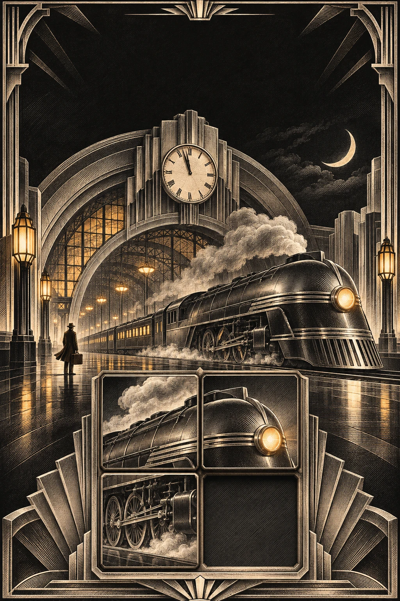

原創版畫 · 經典滑塊一封寄自午夜的車票
午夜特快月台拼圖
列車尚未離站。
滑動散落的光影，拼回這一夜的月台。
不倒數、不催促。每個局面都有解。
玩法與操作
點擊空格旁的圖塊，將 1–8 依序排好，空格留在右下角。也可滑動圖塊，或用方向鍵移動空格旁的圖塊。H 提示、Z 復原、P 暫停。提示只標示下一步，由你親手移動。數字可以隱藏；每段最佳步數獨立保存。
月台影像 / 九宮滑塊
點擊空格旁的圖塊，開始拼圖。
進度自動保存在此瀏覽器

原創版畫 · 經典滑塊一封寄自午夜的車票
列車尚未離站。
滑動散落的光影，拼回這一夜的月台。
不倒數、不催促。每個局面都有解。
點擊空格旁的圖塊，將 1–8 依序排好，空格留在右下角。也可滑動圖塊，或用方向鍵移動空格旁的圖塊。H 提示、Z 復原、P 暫停。提示只標示下一步，由你親手移動。數字可以隱藏；每段最佳步數獨立保存。
點擊空格旁的圖塊，開始拼圖。